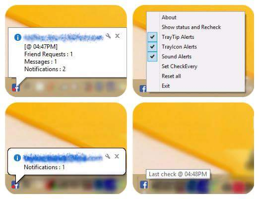

----------------------------
Are you spending much time browsing the facebook news-feed or checking whether a friend sent you a message or not?
This is a desktop tool/software that checks your account frequently for you if you have any:
Notifications, Messages or FriendRequests
it can inform you by:
- Tray tip desktop notification
- Sound alert
- Tray icon
You can also switch all them off, if you want.
----------------------------
Save your time (sorry facebook) ;D
----------------------------
----------------------------
Please report any bugs, problems or suggestions:
issues@github
email: hossam.magdy@ieee.org
----------------------------
Try it. Then if you like it, Share it.